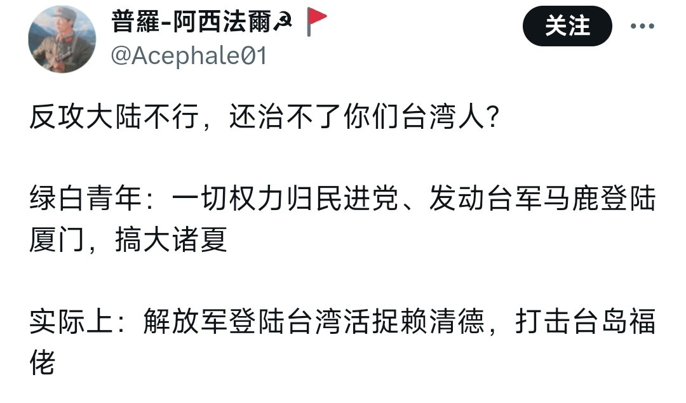
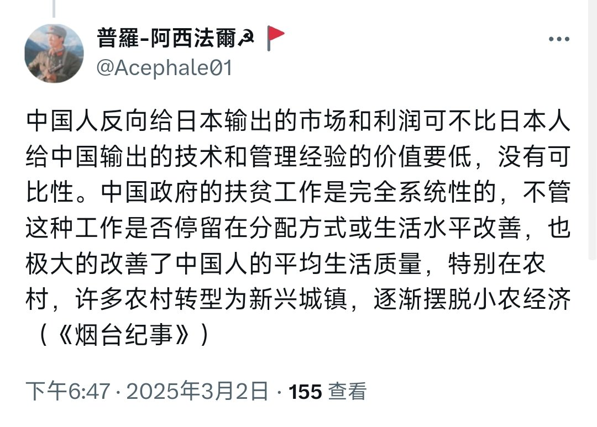
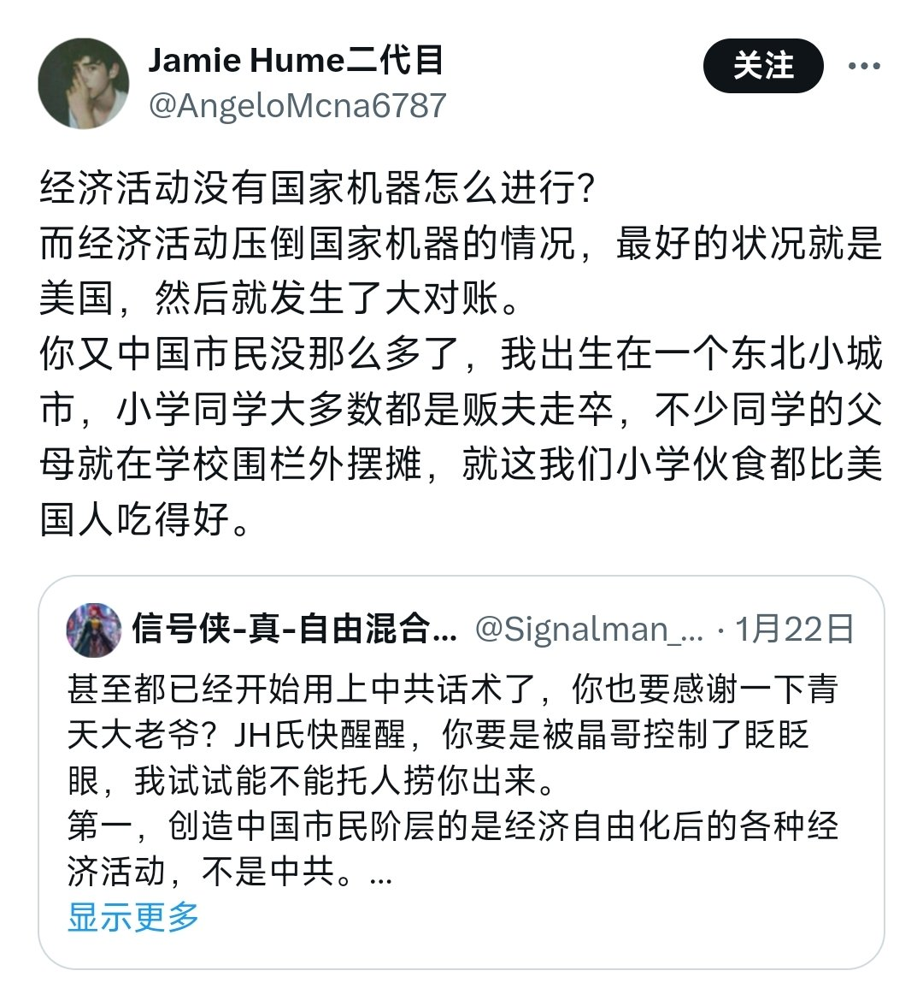

❂🇩🇪🇪🇺🌹𝐀𝐬𝐡𝐥𝐞𝐲 𝐁𝐥𝐨𝐜𝐤🕊️🇺🇦🇹🇼❀
@bolckAshley
@SpaceMechanic01 對於俄烏戰爭也是
我沒怎麼見這幫人譴責普丁
反倒是罵澤連斯基比較經常🌚



🌨️☂️凝冻态❄️☃️
@SpaceMechanic01
人的立场是从言语中表现出来的，我们只能从你的话中了解你的立场，没人会读心术
实际上，你的那些左皮粉红同志们，真就是一句不骂中共和中国资本家，天天逮着自由派和西方骂，甚至给维尼武统台湾叫好，就别怪其他人认为你们是左皮粉红
你们什么时候能拿出谴责“大西洋主义者”的力度来谴责中国建制派？ https://t.co/YYJvNMwRXK https://t.co/vHfs465XlQ